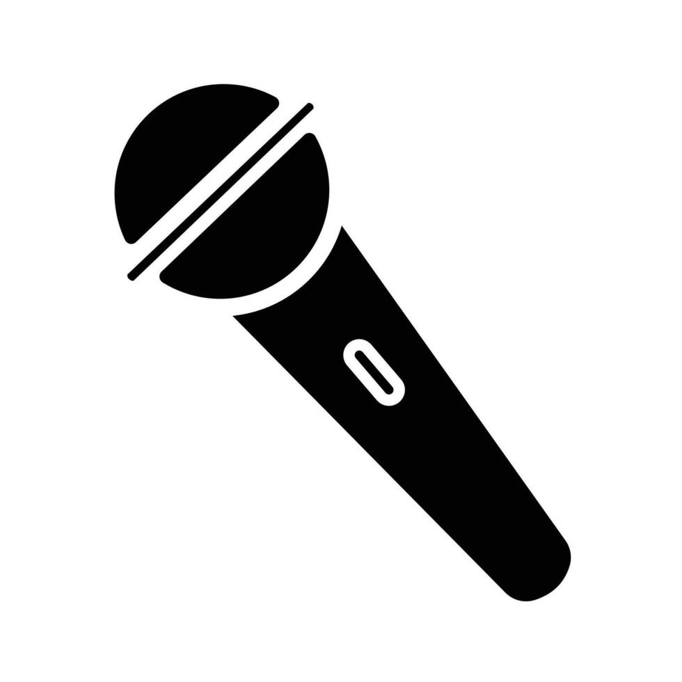

Sobre Nosotros
Conoce la pasión, el esfuerzo y las voces detrás de cada una de nuestras adaptaciones.
Pasión por el doblaje no oficial
Proyecto Fandub nació como un espacio de encuentro para artistas de voz, editores y apasionados de la actuación. Nuestro objetivo es dar una interpretación única y con calidad profesional a contenidos que nos inspiran diariamente.
Trabajamos de forma colaborativa, adaptando guiones con respeto al material original y cuidando cada detalle técnico en la edición para entregar una experiencia auditiva del más alto nivel.

Nuestro Proceso Creativo
1. Traducción y Adaptación
No solo traducimos, adaptamos los diálogos para que fluyan de manera natural en nuestro idioma y coincidan con la sincronía de labios (lip-sync).
2. Casting de Voces
Seleccionamos la voz ideal para cada personaje dentro de nuestro elenco de talentos para asegurar la máxima fidelidad emocional.
3. Edición y Mezcla
Limpiamos el ruido, ecualizamos las voces y las integramos perfectamente con la música de fondo y los efectos de sonido (SFX).